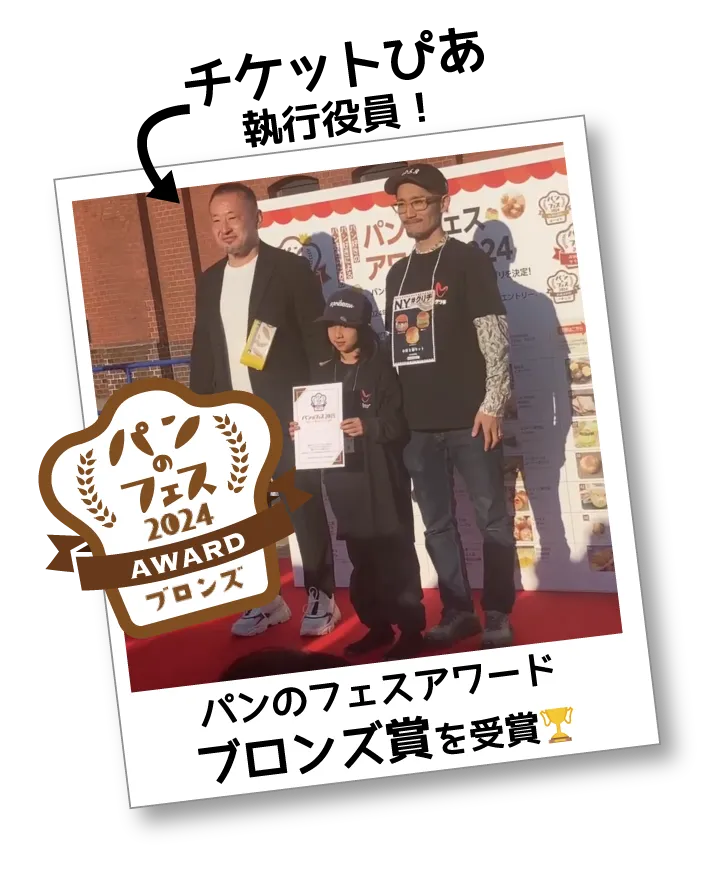
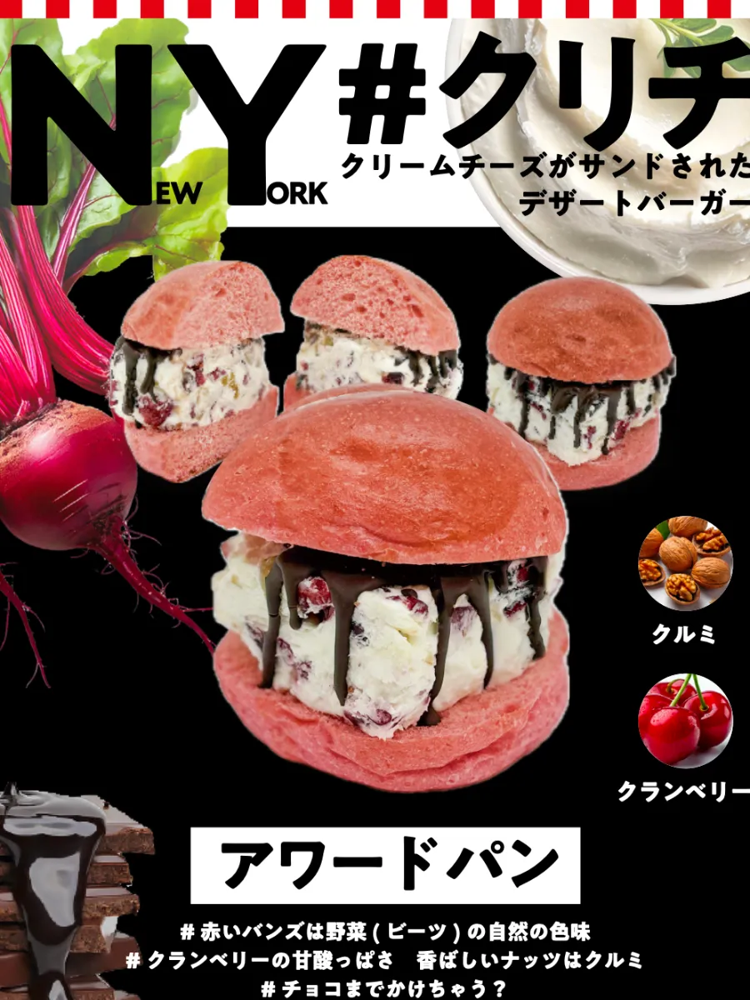

【ご報告】パンのフェス2025 ブロンズアワード受賞！NY#クリチ2000個、完売🎉

こんにちは！マーケティング担当のTOMです。
2025年3月7日〜9日に開催された「パンのフェス2025 in 横浜赤レンガ」、3日間本当にたくさんの方にお越しいただき、心より感謝申し上げます！
🏆 チョコクランベリー&ナッツ、ブロンズアワード受賞！

そして…おかげさまで、アワードパン「NY#クリチ（チョコクランベリー&ナッツ）」がブロンズアワードを受賞しました！
皆さまの温かい応援と投票のおかげです。本当にありがとうございます！🥹✨
🎉 NY#クリチシリーズ、2000個完売！

今回のフェスで販売したのは、以下の3種。
- アワードパン【NY#クリチ（チョコクランベリー&ナッツ）】
- 限定パン【NY#クリチ（抹茶&あんこ）】
- おすすめパン【NY#クリチ（いちじく&ナッツ）】
合計でなんと2000個をご用意しましたが、すべて完売いたしました！会場では連日長い行列、SNSでも多くの投稿をいただき、様々なメディアにも取り上げていただきました。心から、ありがとうございました！
🧀 クリチちゃんからのごあいさつ
こんにちは〜！わたし、クリチちゃん！🧀✨
クリームチーズがだ〜いすきな、元気な女の子です♪
ブロンズアワード、本当にありがとうっ！たくさんの「おいしい！」を聞けて、わたしとっても幸せでした！
でもね…
「次はグランプリ、ぜったい取るもん！」
「そして、世界に広がるフードチェーンにするのが夢なの〜っ！」
「これからも応援よろしく〜✨」
🛒 オンラインストアもやってます
イベントには来られなかった皆さんにも、NY#クリチ シリーズをお届けできるオンラインショップがあります。いつでもおうちで「#クリチ体験」ができますよ〜！ぜひこちらもチェックしてみてください♪
👦 フェスでは「こども店長」も活躍！
今回の出店ブースでは、こども店長も大活躍！元気いっぱいの「いらっしゃいませ！」や、お客さまと笑顔でやり取りする姿がとっても印象的でした😊
こどもたちの頑張りに、たくさんの拍手とエールをいただき、ブースもさらに温かい空気に包まれました。これからも一緒にVswを盛り上げてくれる、頼もしい存在です💪✨
🍞 パンのフェスとは？
全国の人気パン屋さんが集結する、日本最大級のパンイベント！🥐✨ 毎年多くのパン好きが訪れ、こだわりのパンを楽しめる夢のような3日間です😍
📍 パンのフェスの魅力
- ✅ 全国の有名パン屋が集結！普段行けないお店のパンが一度に楽しめる
- ✅ 限定パンが登場！ここでしか買えない特別メニューも
- ✅ 来場者投票でNo.1パンを決定！🏆
- ✅ 横浜赤レンガ倉庫で開催！美味しいパン×絶景のロケーション
📅 パンのフェス2025 開催概要
- 📍 会場：横浜赤レンガ倉庫イベント広場
- 📅 開催日程：2025年3月7日(金)〜9日(日)
- 🎟 入場：無料エリア＆有料エリアあり